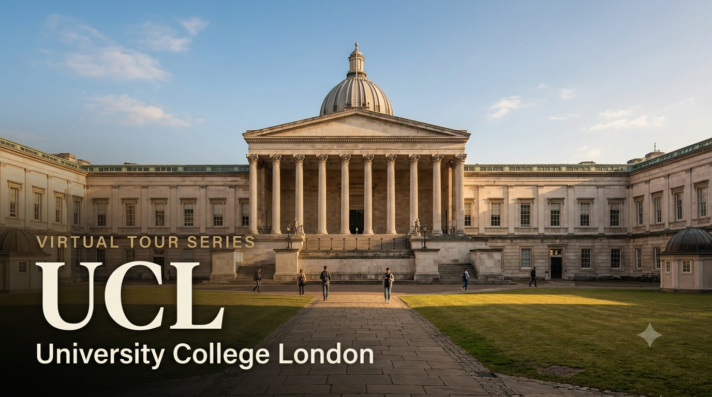

University Spotlight: UCL — Virtual Tour Guide

I'm delighted to share the eighth and final edition of the University Virtual Tour Series — a curated resource to help your child explore some of the world's leading universities from the comfort of home. University College London is one of only two UK universities in the QS global top 10 (alongside Imperial), and it offers one of the most diverse, research-intensive academic environments in the world — in the heart of one of the greatest cities. Students from both the CBSE and Cambridge programmes will find this resource relevant — UCL accepts both qualifications.
I strongly recommend that parents of Grade 9 and above students make the time to visit at least one university — UCL, a local university in India, or any institution of your choice. A physical visit gives your child something no virtual tour can replicate: they will see the infrastructure and facilities with their own eyes, observe how professors engage with students in live classrooms, and most importantly, spend time talking to existing students about their day-to-day experience. These conversations almost always leave a lasting impression and help students make more grounded, confident decisions about their future. If you'd like guidance planning a visit, feel free to get in touch.
UCL Admission Requirements — CBSE and Cambridge A Level
The table below summarises what UCL officially requires for students applying through each pathway. UCL's specific grade requirements vary significantly by department — feel free to reach out for a one-on-one session on course-specific entry requirements.
| Requirement | CBSE Grade 12 | Cambridge A Level |
|---|---|---|
| Qualification | Indian Standard 12 — CBSE Board; recognised and accepted by UCL | Cambridge International A Level; 3 A Level subjects minimum |
| Typical Offer — Sciences/Engineering | 85–95%+ aggregate in top 5 subjects; 90%+ in key subjects for competitive programmes (CS, Engineering, Architecture) | AAA to A*AA depending on programme; A* typically required for Architecture and Computer Science |
| Typical Offer — Arts/Humanities/Social Sciences | 80–90%+ aggregate; strong marks in relevant subjects | AAB to AAA depending on programme; History, Law, and Economics more competitive |
| English Proficiency — IELTS | IELTS 6.5 overall (standard programmes) to 7.0 (law, social sciences); minimum 6.0–6.5 per component depending on programme | Waived for Cambridge A Level students who studied in English at an English-medium school |
| Application Portal | UCAS — deadline 15 January (standard UK deadline) | UCAS — same deadline |
| Personal Statement | 4,000 characters via UCAS; subject-focused; UCL expects academic motivation and intellectual curiosity | Same format and expectations |
| Reference | One academic reference via UCAS; school teacher or counsellor | Same |
| Admissions Tests | Architecture (ARB): portfolio required; Law: LNAT required; Medicine: UCAT required | Same — all applicants take the same tests |
| Interview | Not required for most programmes; required for Medicine, Dentistry, and some Architecture programmes | Same |
| Subject Prerequisites | Vary widely by course — e.g., Mathematics required for Engineering, Economics, Computer Science; Chemistry required for Pharmacy and Medicine | A Level prerequisites align with course requirements — e.g., A Level Mathematics for Engineering |
Unlike Imperial (specialist STEM) or LSE (economics and social sciences only), UCL offers the full range of academic disciplines — from Neuroscience to Architecture, from Pharmacy to History of Art, from Computer Science to Languages. With 42,000+ students across 10 Faculties, UCL is one of the most academically comprehensive institutions in the UK. For students who are considering multiple fields or who want to be in an environment of genuine intellectual diversity, UCL's breadth is a distinct advantage over specialist institutions.
Voices from UCL — Indian Students and Alumni
"UCL was where I first understood what it meant to be part of a global institution. My cohort had students from 60+ countries, and learning alongside them — their perspectives, their contexts — was itself a form of education."
— Ananya Singh, India, MSc Neuroscience, UCL Institute of Neurology | Currently: Researcher, Wellcome Sanger Institute, Cambridge
"Mohandas Gandhi studied law at UCL. That is a fact that UCL rightfully acknowledges — and it tells you something about the institution's long relationship with India and Indian students."
— UCL archives note — Mahatma Gandhi enrolled at the Inner Temple (linked to UCL's Faculty of Laws) in 1888
Why Should Your Child Consider UCL?
1. QS Top 10 for 15 Consecutive Years — One of Only Two UK Universities in the Global Top 10
UCL has been consistently ranked in the QS global top 10 for 15 consecutive years — the QS 2027 edition places it at #8 globally (released 18 June 2026). UCL is one of only two UK universities to achieve this — alongside Imperial College London. This sustained position reflects UCL's global reputation in research, academic output, employer connections, and international student experience. For Indian students and employers, UCL carries immediate and universal academic recognition.
2. London — The World's Most Connected City for Indian Students
UCL sits in Bloomsbury — the heart of one of London's most prestigious academic districts, steps from the British Museum, the British Library, and the Inns of Court. London is home to over 600,000 Indian-origin residents — the largest South Asian diaspora city in the world outside India and the Gulf. Indian students at UCL benefit from a uniquely supportive community: Indian grocery stores, temples, cultural organisations, professional networks, and alumni across every major UK sector. The UCL Indian Society is one of the largest student societies at the university, with Diwali, Holi, classical music evenings, and career networking events as regular features of student life.
3. UCL's Research Strengths — Discovery-Driven Education
UCL is ranked #2 in the UK for research impact (Research Excellence Framework 2021 — Research Power measure). Its most distinguished research departments include: Neuroscience and Brain Sciences (UCL Institute of Neurology; UCL Francis Crick Institute collaboration), Computer Science (machine learning, AI, human-computer interaction), Architecture (Bartlett School of Architecture — ranked #1 globally in QS 2027), Urban Planning, Economics, and Medicine. UCL students at undergraduate level are actively encouraged to participate in live research projects, attend departmental seminars, and engage with faculty research — from their first year.
4. UCL's Unique Academic Heritage — Founded on Radical Inclusion
UCL was founded in 1826 as the first university in England to admit students regardless of religion, race, or gender — a radical act at the time when Oxford and Cambridge were restricted to Church of England members. This legacy of inclusion shapes UCL's culture today: it is the most international student body in the UK (students from 150+ countries), the most research-diverse, and consistently one of the most welcoming environments for international students. Mohandas Gandhi studied law in London (enrolled at the Inner Temple, which had formal connections to UCL's Faculty of Laws in 1888) — a historical fact that UCL acknowledges with pride and that reflects the deep historical relationship between this institution and the Indian tradition.
What Parents Should Know
- Annual tuition fee for international students: approximately GBP 29,900–49,000 (~INR 32–52 lakhs at ~GBP 107/INR, June 2026) depending on programme; Medicine and Architecture (Bartlett) are at the higher end
- Living costs in London: approximately GBP 12,000–15,000/year (~INR 13–16 lakhs); UCL guarantees first-year accommodation for all international students who accept an offer by the accommodation deadline
- UCAS deadline is 15 January — standard UK deadline (unlike Oxford and Cambridge at 15 October); preparation can start in Grade 12
- Most UCL programmes do not require an interview; only Medicine, Dentistry, Architecture, and a few other programmes have an interview or portfolio requirement
- The UCL Global Undergraduate Scholarship offers partial financial support to academically outstanding international students — highly competitive; awarded to approximately 30–40 students globally each year
- UK Student visa (Tier 4) required — apply online once the CAS (Confirmation of Acceptance for Studies) is received from UCL; biometric appointment at the nearest UK Visa Application Centre in India
This eighth and final edition brings the University Virtual Tour Series — Edition 2026 to a close. We've covered eight universities across the UK, USA, and Singapore: NUS, MIT, Imperial, Oxford, Harvard, Cambridge, Stanford, and UCL. I hope this series has given you and your child a clearer, more grounded picture of what each institution offers — academically, financially, and culturally. These posts are starting points, not final answers. Every child's path is their own, and the right university is the one that fits the person they are becoming. If you'd like to explore any of these options in more depth — or discuss institutions not yet covered — I'm always happy to help. Write to me at pcmadankumar@gmail.com or get in touch via the contact page.
I curate University Virtual Tour resources as part of my commitment to helping students and parents make informed post-secondary decisions. Future editions will continue to spotlight leading universities across major study destinations worldwide, including the UK, USA, Australia, Canada, India, and Singapore.
Best wishes,
Madan Kumar PC
References
- QS World University Rankings 2027 — UCL #8 globally; 15th consecutive year in QS top 10 (released 18 June 2026). topuniversities.com
- UCL — Undergraduate Entry Requirements: India. ucl.ac.uk
- UCL — English Language Requirements. ucl.ac.uk
- UCL — International Student Fees 2026–27. ucl.ac.uk
- UCL Global Undergraduate Scholarship. ucl.ac.uk
- Research Excellence Framework 2021 — UCL #2 UK for Research Power. ref.ac.uk
- QS Architecture Rankings 2027 — Bartlett School of Architecture, UCL #1 globally. topuniversities.com
- UCL — History and Heritage. ucl.ac.uk
- UCAS — How to Apply. ucas.com
- University College London Campus Tour — YouTube. youtube.com